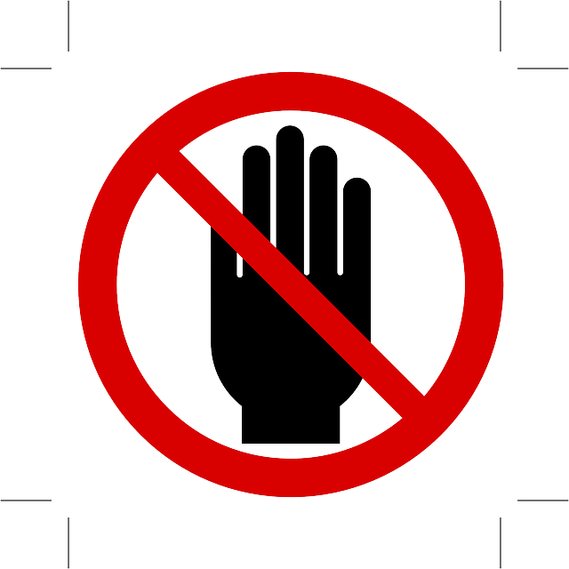

We believe security software like Whonix needs to remain Open Source and independent. Would you help sustain and grow the project? Learn more about our 14 year success story and maybe DONATE!

The wiki page provides guidelines and good habits for online privacy and security, with a focus on distinguishing between anonymity and pseudonymity. It also offers tips for using Tor with the Whonix operating system, connecting to internet servers and resources securely, and avoiding risky scenarios.
Introduction
This chapter provides an inexhaustive list of behaviors that users SHOULD DO when strong anonymity is necessary.
Definitions
The following concepts are crucial for all chapters. Therefore a definition is warranted. We define
- Identity: the unique set of characteristics that can be used to identify a person and their unique physical body as themself and no one else
- Pseudonymity: the near-anonymous state in which a person has a consistent identifier [1] that is not their real name
- Anonymity: the state of a person's identity being unknown to all other people than themself
- De-Anonymization: the process or final state of revealing the true identity of a anonymous or pseudonymous person. All data linked to the anonymous or pseudonymous entity can then be connected to the true identity.
Anonymity Modes
Study: Anonymity and Pseudonymity are not the same
This chapter explains the difference between pseudonymous connections and anonymous connections. Please read the #Definitions before you proceed. Note that defining terms is always a difficult process because a majority consensus is required:
- Pseudonymous connection: A connection to a destination server, where it is not possible to discover the origin (IP address / location) of the request, but the request can be associated with an identifier [1]. The more often an pseudonymous identifier is detected the easier this pseudonym is traced back to a real identity.
- Anonymous connection: A connection to a destination server, where it is neither possible to discover the origin (IP address / location) of the request, nor to associate any identifier [1] with it.
In an ideal world, perfection would be achieved by the Tor network, Tor Browser, computer hardware, physical security, the underlying operating system, and so on. For example, in this utopia the user could fetch a news website, and neither the news website or the website's ISP would have any idea if the user had ever made contact before. [2]
In contrast, the imperfect scenario results when software is used incorrectly, like when stock Firefox is used over the Tor network instead of the "Tor-safe" Tor Browser. The unfortunate Firefox user still protects their original connection (IP address / location) from discovery, but an identifier (like cookies) can be used to make that connection pseudonymous. For example, the destination website could log "user with id 111222333444 viewed Video Title A at Time B on Date C and Video Title D at Time E at Date F." This information can be used for profiling, which over time becomes more comprehensive. The anonymity set is gradually reduced, and in the worst case leads to de-anonymization.
As soon as a user logs into a website with a username for activities like forum posting or webmail, the connection is by definition no longer anonymous, but pseudonymous. The origin of the connection (IP address / location) is still hidden, but the connection can be associated with an identifier [1]; in this case, an account name. Identifiers can be used to keep a log of various things: when a user wrote something, the date and time of login and logout, what a user wrote and to whom, the IP address used (useless if it is a Tor exit relay), the recorded browser fingerprint and so on.
The authors strongly recommend always preferring anonymity, not pseudonymity. But there are other opinions. Maxim Kammerer, developer of Liberté Linux [3], for example has disparate ideas on anonymity and pseudonymity which should not be withheld from the reader so you can form your own opinion: [4]
I have not seen a compelling argument for anonymity, as opposed to pseudonymity. Enlarging anonymity sets is something that Tor developers do in order to publish incremental papers and justify funding. Most users only need to be pseudonymous, where their location is hidden. Having a unique browser does not magically uncover user's location, if that user does not use that browser for non-pseudonymous activities. Having good browser header results on anonymity checkers equally does not mean much, because there are many ways to uncover more client details (e.g., via Javascript oddities).
Keep Anonymity Modes separate
 Warning: You should keep anonymity modes separate!
Warning: You should keep anonymity modes separate!
The four primary anonymity modes are outlined below. These "modes" are different behavior patterns that a user will consciously or unconsciously apply to his online activities. We highly recommend that you consciously keep those "modes" separate to only be identifiable when you need to and otherwise stay anonymous safely.
Mode 1: Anonymous User; Any Recipient
- Scenario: Posting messages anonymously in a message board, mailing list, comment field, forum and so on.
- Scenario: Whistleblowers, activists, bloggers and similar users.
- The user is anonymous.
- The real IP address / location stays hidden.
- Location privacy: The user's location remains secret.
Mode 2: User Knows Recipient; Both Use Tor
- Scenario: The sender and recipient know each other and both use Tor.
- Communication occurs without any third party being aware of this activity or having knowledge that the sender and recipient are communicating with each other.
- The user is not anonymous. [5]
- The user's real IP address / location stays hidden.
- Location privacy: The user's location remains secret.
Mode 3: User Non-anonymous and Using Tor; Any Recipient
- Scenario: Logging in with a real name into any service like webmail, Twitter, Facebook and others.
- The user is obviously not anonymous. As soon as the real name is used for the account login, the website knows the user's identity. Tor can not provide anonymity in these circumstances.
- The user's real IP address / location stays hidden.
- Location privacy. The user's location remains secret. [6]
Mode 4: User Non-anonymous; Any Recipient
- Scenario: Normal browsing without Tor.
- The user is not anonymous.
- The user's real IP address / location is revealed.
- The user's location is revealed.
Conclusion
Based on the preceding information, the table below outlines behavior that should be avoided.
Combination |
Example |
|---|---|
Anonymity modes 1 + 2 |
If the user has an instant messenger or email account and uses that via mode 1, it is inadvisable to use the same account for mode 2. The reason is the user is mixing absolute anonymity (mode 1) with selective anonymity (mode 2; since the recipient knows the user). |
Two or more modes inside the same Tor session |
Using an encrypted chat application over Tor and then posting in the Whonix forum without rotating Tor circuits. If the modes share the same Tor exit relay, this could lead to identity correlation. |
Two or more modes inside the same Whonix-Workstation™ |
Using the same Whonix-Workstation for encrypted email as well as posting to a Tor Project mailing list. If the workstation is compromised, this leads to identity correlation. |
Other combinations |
Combining other modes may also be dangerous and could lead to the leakage of personal information or the user's physical location. |
License
License of "Do not Mix Anonymity Modes": [7]
Good Habits for Identities, Personal and System Information
This chapter helps you identify unsafe behaviors and establish good habits for keeping your personal data and your real identity safe.
Always Withhold your Identifying Data
De-anonymization can happen due to exposure of connections or IP addresses. But this threat can also result from social interactions online. A number of common sense recommendations to avoid de-anonymization suggested by [Anonymous] are listed below. Users SHOULD REFRAIN FROM:
- Including personal information or interests in nicknames.
- Discussing personal information like location, age, marital status and so on. Over time, discussions about something trivial like the weather could lead to an accurate idea of the user's location.
- Mentioning one's gender, tattoos, piercings, physical capacities or disabilities.
- Mentioning one's profession, hobbies or involvement in activist groups.
- Using special characters on the keyboard which only exist in your language.
- Posting information to the regular internet (clearnet) while anonymous.
- Using Twitter, Facebook and other social network platforms. This is easy to correlate.
- Posting links to Facebook and Discord images. The image name contains a personal ID.
- Connecting to same destination at the same time of the day or night. Try to vary connection times.
- Forgetting that IRC, other chats, forums, mailing lists and so on are public arenas.
- Discussing anything personal whatsoever, even when securely and
anonymously connecting to a group of strangers.
- The group recipients are a potential hazardous risk ("known unknowns") and could have been forced to work against the user.
- It only takes one informant to destroy a group.
Perhaps most importantly, never forget invincible heroes only exist in comic books. Real heroes are actively targeted. There are only young heroes, dead heroes and only a few very cautious survivors.
If any identifying data must be disclosed, treat it as "sensitive data" as outlined in the previous point.
License: From the JonDonym documentation (Permission).
Always go the Extra Mile with Security
Some users conclude that because various computing security mechanisms can be subverted in obscure cases, it is not worth implementing them at all. That's a fallacy. We recommend: always go the extra mile! For example, users might:
- Fail to use a BIOS password because computing history reveals a master BIOS password existed at some time.
- Ignore advice relating to full disk encryption due to the existence of attack vectors like cold boot attacks.
- Refrain from setting up Anti-evil Maid protection for their computer (despite the presence of a Trusted Platform Module), because research reveals that attackers can sometimes recover private keys from digital signature schemes. [8]
- Use less-researched, unproven, proprietary networks in preference to Tor, due to known vulnerabilities such as end-to-end correlation attacks.
It might be tempting to bypass long-studied and robust security mechanisms due to perceived failings, particularly if the user is not an expert in areas such as Tor routing, full disk encryption, and so on. But this is illogical and often just an excuse for laziness or unsatisfied perfectionism. Avoid the trap of letting "the perfect be the enemy of the good". Computer software and hardware solutions will always remain imperfect. But steady, incremental improvements are occurring over time. It is a crucial mistake to confuse the transparency of developers and engineers about small shortcomings with a failure of these highly capable solutions. The engineers and developers only highlight shortcomings to then improve the software or hardware even more through rigorous discussion.
Change Pseudonyms Regularly
The longer the same pseudonym[1] is used, the higher the probability that mistakes are made which reveal the user's identity. Once this occurs, an adversary can go back and link all activity related to the pseudonym and have a connected picture about the pseudonym and potentially about the real person, revealing their true identity. As a precaution, regularly create new pseudonyms and stop using old ones.
Avoid Posting Full System Logs or Full Configuration Files
In forums users are often encouraged to share system logs or configuration files for debugging purposes. Out of convenience they copy and paste full logs and file contents. However this can be dangerous. On a typical computer system, logs will be generated by the host or virtual operating systems, applications, and other background processes. Each of the log entries records a variety of detailed information about system and network activity. Configuration files can also reveal details that degrade privacy. Depending on the log or configuration file in question, this may include: [9] [10] [11]
- Host IP addresses.
- Boot-time information.
- Specific locations where information originates like messages or emails.
- Logins / authentication attempts.
- Timestamps.
- Running background daemons.
- Kernel messages.
- Detailed operating system information, configurations and protocols.
- Details of all attached devices.
- Usernames and accounts.
- Privileged users.
- Networking configurations and connections.
- VPN providers and configurations.
- Tor bridges, guards or exits being used.
- Detailed hardware specifications, including potentially serial numbers.
- Software packages, version details, and installation events.
- Information about running mail or web servers.
- Printer and printing related information.
- Timezone details.
- Firewall settings.
- Misconfigured software applications.
- Cron job information.
- Command line operations.
- And more.
Logs are a useful tool for debugging or to better understand how well applications are running on a system. However, if a user is considering posting system logs when requesting assistance, then it should be carefully curated rather than posted in full. Similarly, it is dangerous to post full configuration files, for example, torrc files that reveal full bridge information. If this advice is ignored, the user may be inadvertently de-anonymized or might otherwise provide details that aid an adversary to attack their system.
Avoid Posting Sensitive Screenshots, Recordings and Photographs
Users often post screenshots, screen captures, or photographs of their entire desktop, without considering the privacy implications or potential metadata that is attached to the image. Depending on what is visible in the picture, this may reveal the user's operating system, timezone, username, documents, software packages and other sensitive information. [12] If meta tags are not removed, particularly from photographs, then EXIF data (read more about EXIF data) could result in a significant reduction in the user's anonymity set, or in the worst case scenario lead to de-anonymization.
Photographs with digital cameras may also reveal additional information due to screen reflections, visible objects outside of the screen, the amount of visible light (indicating the likely time of day or night), and possibly fingerprints left on the screen itself. At a minimum, any uploaded images should be sanitized with the Metadata Anonymisation Toolkit or other tools.
Send Sensitive Data ONLY WITH End-to-end Encryption
 As already explained on the Warning page, Tor exit relays can eavesdrop on
communications. Man-in-the-middle attacks are also possible, even with
HTTPS. Using end-to-end encryption is the only way to send sensitive
data to a recipient without it being potentially intercepted and
disclosed to hostile third parties.
As already explained on the Warning page, Tor exit relays can eavesdrop on
communications. Man-in-the-middle attacks are also possible, even with
HTTPS. Using end-to-end encryption is the only way to send sensitive
data to a recipient without it being potentially intercepted and
disclosed to hostile third parties.
Only Use One Online Pseudonym at the Same Time
Managing multiple pseudonyms online is increasingly difficult and fraught with mistakes. Different online pseudonyms can be easily correlated if used simultaneously. By correlation attackers create one super pseudonym from multiple pseudonyms which might easily lead to de-anonymization. Tor may reuse some circuits in the same browsing session or information could potentially leak from Whonix-Workstation. Whonix does not magically separate different pseudonyms.
Imagine a chat room with 20 people where everyone can see the online status of everyone else. If 1 user has 5 pseudonyms (sock puppets) in the chat room and loses its internet connection, then all pseudonyms will go offline at the same time. In that case, it would be easy to guess for other participants that multiple accounts all belong to the same pseudonym.
However, see next chapter.
Do Multiple Things at Once
Users: Do multiple things at once with your Tor client'
Because Tor uses encrypted TLS connections to carry multiple circuits, an adversary that externally observes Tor client traffic to a Tor Guard node will have a significantly harder time performing classification if that Tor client is doing multiple things at the same time. This was studied in section 6.3 of this paper by Tao Wang and Ian Goldberg. A similar argument can be made for mixing your client traffic with your own Tor Relay or Tor Bridge that you run, but that is very tricky to do correctly for it to actually help.https://blog.torproject.org/new-low-cost-traffic-analysis-attacks-mitigations/
However, Only Use One Online Pseudonym at the Same Time is also applicable.
See also Multiple Whonix-Workstation chapter Safety Precautions.
Avoid (Mobile) Phone Verification (Use only with caution)
- Phone number de-anonymization risk: Websites such as Google, Facebook and others will request a mobile or landline phone number or require a mobile phone when attempting to log in, especially when logging in over Tor. Unless the user is very clever or has an alternative, this information should not be provided.
- Mobile companion app de-anonymization risk: Some applications, particularly Chat (messenger) applications such as Signal, Telegram, and Wickr, might also request a phone number or companion app installation on a mobile phone. Any companion app installed on a mobile device is likely to establish a direct, identifiable connection to the application's server, thereby exposing the user's IP address. This is very dangerous and carries a very high risk of leaking the user's real IP address.
If you must use a phone number, it will either involve a real SIM card or a virtual SIM card/mobile number.
Choose Real SIM or Virtual SIM card/mobile number.
Real SIM Card
Any phone numbers provided will be permanently logged. The SIM card is most likely registered in the user's real name. Even if this is not the case, receiving an SMS reveals the user's location to the mobile carrier. Users can attempt to anonymously purchase a SIM card far from their usual home address, but a risk still remains: the phone itself. Each time the phone connects to the mobile network, the provider logs both the SIM card serial number (IMSI) and the phone's serial number (IMEI). The network carrier will "marry" (link) these two numbers permanently. If the SIM card is bought anonymously but not the phone, anonymity is compromised due to the linkage of these two serials.
Any companion app installed on a mobile phone will most likely connect non-anonymously to the application's server, resulting in an IP leak.
If a user adamantly wants to perform mobile verification, it is recommended to use a location far from home, along with a new phone and a fresh SIM card. Afterwards, the phone must be turned off, and both the phone and SIM card should be completely destroyed. This may require burning the items or using other guaranteed destruction methods.
Another option is to ask someone else to receive the SMS for you, but this merely shifts the risk to that person. [13]
Virtual SIM card/mobile number
Precautions:
- An online service that receives personal SMS messages on your behalf could work and be anonymous. However, this method will likely not work for Google and Facebook, as they actively blacklist such numbers. This option may function on platforms like Discord that do not blacklist numbers as aggressively, but verification may expire or stop working.
- If another user verifies with the same number, Discord may allow the number to be removed from your account and assigned to the other user.
- Another downside is that many of these sites (such as https://sms24.me) conduct heavy browser fingerprinting and advertising.
Based on our testing, we have found the JMP service to be a reliable
provider (though we are not affiliated and cannot guarantee its
reliability). For more details on how to register with their service,
please refer to
 Number Registration Unlinked to SIM Card.
Number Registration Unlinked to SIM Card.
See also:
- Phone Number Validation vs User Privacy
 SIM-based Threats
SIM-based Threats-
Malicious SMS Re-routing
-
Mobile Devices Privacy and Security
Only run Applications inside Whonix-Workstation
The user must run applications inside Whonix-Workstation only. If using an application inside Whonix-Workstation with the purpose of hiding your IP address, running the same application connected to the same account or identity from any other place must be avoided.
For example, when running a chat application or messenger such as Telegram in Whonix-Workstation, do not run any companion application (such as Telegram mobile) on a mobile phone. This is being elaborated in the previous chapter.
Internet Servers and Resources
Only Connect to a Server Either Anonymously Or Non-anonymously
It is strongly recommended against creating Tor and non-Tor connections to the same remote server at the same time. In the event the internet connection breaks down (and it will eventually), all the connections will break simultaneously. Following that event, it is easy for an adversary to determine which public IP address / location belongs to which Tor IP address / connection, potentially identifying the user directly.
This scenario also enables another form of attack by web servers. The speed of either the non-Tor or Tor connection can be increased or decreased, to see if there is a correlation. That is, if either connection gets faster or slower in unison, then the relationship between a non-Tor and Tor link can be established.
License of "Do not connect to any server anonymously and non-anonymously at the same time!": [7]
Be Wary of Random Files or Links
If the user is sent any type of file or a link to the file (or a random internet URL/resource), either by email or another method, caution is recommended regardless of the file format. [14] That sender, mailbox, account, or key could be compromised and the file or link may have been prepared to infect the user's system when opened with a standard application. It is also feasible that files such as PDFs may leak a range of system data or have embedded tracking code which is activated when opened in a Internet-connected VM.
It is safer not to open the file with the default tool that is expected by the file's creator. For example, a PDF should not be opened with a PDF viewer, or if the content is public, a free online PDF viewer could be used. Greater security would involve sanitizing the PDF in Qubes-Whonix™, or opening the file or link in a Disposable so that it cannot compromise the user's platform. Even better, the computer can also be physically disconnected from the Internet or VM network access disabled before opening it.
Let others spread your social links first
 Avoid the temptation to be one of the first people to promote your new
"anonymous" project!
Avoid the temptation to be one of the first people to promote your new
"anonymous" project!
Being the first to spread the message often means being the creator of a project. For creators with a public persona and an anonymous persona this can easily mean de-anonymization. Therefore for example, it is inadvisable to be the first to spread links if the user:
- Created an anonymous blog or onion service.
- Has a twitter account with lots of followers.
- Runs a big clearnet news page or similar.
The more your projects are separated, the better. Of course, at some point the user may or even must "naturally" become aware of the new project, but extreme caution is sensible at this juncture. As your public persona be a "late adopter" of your own anonymous project.
Behave like most other users on your websites
"I wonder what my site looks like when I'm anonymous?" [15]
It is best to avoid visiting personal websites where either your real name or pseudonyms are attached, particularly if they have ever been tied to a non-Tor connection / IP address. Very few people are likely to visit your personal website over Tor, meaning the user may be the only unique Tor client to do so.
This behavior leads to weak anonymity because once the website is visited the Tor circuit is "dirty". If the site is not popular and does not receive much traffic, the Tor exit relay can be fairly certain that the visiting individual always is the same user. After that point, it can be reasonably assumed that further connections originating from that Tor exit relay also come from the same user's machine.
Source: [16]
Logins
Always separate Non-Tor and Tor Accounts
Some users feel too comfortable when using Tor, so much so that they log into accounts that they have at least once used without Tor. Be aware that this completely de-anonymizes the account forever - even if you use Tor every other time. Therefore we highly recommend a rigorous separation of Tor and Non-Tor accounts without exception. The need for this can be demonstrated easily:
Always assume that each time a website is visited, logging by the destination server will include: [17]
- Client IP address / location.
- Request date and time.
- Specific webpages requested.
- HTTP code.
- Number of bytes served to the user.
- The user's browser agent.
- The referring website (referrer).
Also assume that the Internet Service Provider (ISP) will at a minimum log total online time and the client IP address / location. The ISP may also log the IP address / location of visited destinations, how much traffic (data) was generated, and what was sent and retrieved. Unless Internet traffic is encrypted, the ISP will be able to see exactly what activities were performed, and the information sent or received.
The following tables provide a simplified overview of how those logs may appear to administrators.
Name |
Time |
IP/location |
Traffic |
|---|---|---|---|
John Doe |
16:00 - 17:00 |
1.1.1.1 |
500 MB |
Name |
Time |
IP/location |
Traffic |
Destination |
Content |
|---|---|---|---|---|---|
John Doe |
16:00 - 17:00 |
1.1.1.1 |
1 MB |
google.com |
Searched for thing one, thing two... |
John Doe |
16:00 - 17:00 |
1.1.1.1 |
490 MB |
youtube.com |
Viewed video 1, video 2, ... |
John Doe |
16:00 - 17:00 |
1.1.1.1 |
9 MB |
facebook.com |
Encrypted traffic |
Name |
Time |
IP/location |
Traffic |
Content |
|---|---|---|---|---|
- |
16:00 - 16.10 |
1.1.1.1 |
1 MB |
Searched for thing one, thing two... |
It is clear that uniform logging by websites and ISPs enables the user's activities and interests to be easily determined.
An account is forever compromised and tied to the user if even a single login originates from a non-Tor connection / IP address. Singular mistakes are often fatal and have led to the downfall of many "anonymous" users.
Exceptions for Online Banking and Online Payment Accounts
Logging into banking, PayPal, eBay or other important financial accounts registered in the user's name via Tor is not recommended. Where money is involved, use of Tor risks the account being suspended due to "suspicious activity" by the fraud prevention system. The reason is hackers sometimes use Tor for committing fraud.
Using Tor with online banking and payment accounts is not anonymous for reasons already outlined. It is pseudonymous and only offers location privacy and a circumvention method in the event access to the site is blocked by the ISP. The difference between anonymity and pseudonymity is covered in an earlier section.
If a user is blocked, in many cases the service's support division can be contacted in order to have the account unblocked. Some services will even allow the fraud protection policy to be relaxed for the user's account.
Location privacy can be a worthwhile goal. However, the user should be aware that banking or other online payment accounts risk getting (temporarily) suspended. Other outcomes are also possible (service bans, account deletion and so on) as mentioned in warnings on this page and throughout the Whonix documentation. Users who are aware of the risks and who feel comfortable using Tor in their personal circumstances are of course free to ignore this advice.
Be aware that Social Networks Most Often Know Who You Are
Don't bother logging into your personal Facebook or other social network accounts over Tor. Even if a pseudonym is used instead of a real name, the account likely has linked friends who know the account's true owner. As a result, the social network with an extremely high accuracy can guess who the user really is.
No anonymity solution is perfect. Online anonymity software may reliably hide IP addresses and location data, but Facebook and similar corporations do not need this information. Social networks are experts in de-anonymization and already know: who the user is, associated friends, the content of "private" messages sent and so on. This data is at least stored on social network servers, and no kind of software can delete it. Only social networking platforms and hacking groups could remove it. [19]
Users who log into personal Facebook and other accounts only get location privacy, but not anonymity.
This is not well understood by some social network users: [20]
mike, am i completely anonymized if i log onto my facebook account? im using firefox 3.6 with tor and no script on windows 7 machine. thank you.
Always Log Out from Twitter, Facebook, Google etc.
The danger of third-party resources to privacy should not be underestimated: [21] [22]
Every time a user's browser is instructed to fetch a third-party resource, that third-party server is given the ability to deliver tracking scripts and associate the first-party website with the bearer of third-party cookies and browser fingerprints. This tracking of online behavior allows for the construction of increasingly detailed user profiles, including sensitive information such as a user's political views and medical history.
Therefore restrict the logged in time for Twitter, Facebook, Google and any other account-based services (like web forums) to the absolute minimum required. Immediately log out after reading, posting, blogging and other tasks are complete. Following log out, it is safest to then shut down Tor Browser, change the Tor circuit using a Tor Controller, wait for 10 seconds until the circuit has changed and then restart Tor Browser. For better security follow the recommendations to use multiple VM Snapshots and/or use multiple Whonix-Workstation.
This behavior is necessary because many websites include one or more of the many integration buttons, such as Facebook's "Like" button and Twitter's "Tweet This". [23] In fact, in the top 200,000 Alexa websites, Facebook and Twitter social widgets are included in around 47% and 24% of those, respectively. Google third-party web services are included in around 97% of the same sample, mainly comprising Google analytics, advertisements and CDN services (googleapis.com). [21] [24] If a user is still logged into a service, those buttons tell the originating service that the website was visited. [25]
Users should also read the chapter above.
System Settings
Change Settings ONLY if the Consequences are KNOWN
It is usually safe to change user interface settings for applications which do not connect to the internet. For example, checking a box like "Don't show any more daily tips" or "Hide this menu bar" will have no effect on anonymity.
However changing settings for applications which connect to the internet (even user interface settings) should be thoroughly reviewed. For example, removing a menu bar or maximizing the screen in Tor Browser is recommended against. The latter is known to modify the detectable screen size, which worsens the user's web fingerprint.
Before changing any settings you are interested in, first read the Whonix documentation. If the change is documented and recommended against, then try to persevere with the defaults. If the change is undocumented, then carefully research the proposed action before proceeding.
Modification of network settings should only be undertaken with great care, and if the consequences are known. For example, users should avoid all advice pertaining to "Firefox Tuning". If the settings are believed to be sub-optimal, then changes should be proposed upstream so they change for all Tor Browser users with the next release. For a comprehensive list of unsafe Tor Browser habits, see here.
Tor
Refrain from "Tor over Tor" Scenarios
- Generic description: When a machine or VM (workstation) is used, that is transparently proxied over Tor, it is possible to start a Tor session from the workstation as well as from the gateway that runs Tor, creating a "Tor over Tor" scenario.
- Whonix specific description: Whonix-Gateway's transparent proxying is enabled by default for all of Whonix-Workstation's traffic. When installing an application inside Whonix-Workstation that comes with its own internal Tor client, this might create a "Tor over Tor" scenario.
Doing so produces undefined and potentially unsafe behavior. In theory, the user could get six hops instead of three in the Tor network. However, it is not guaranteed that the three additional hops received are different; the user could end up with the same hops, possibly in reverse or mixed order. The Tor Project opinion is that this is unsafe: [26]
We don't want to encourage people to use paths longer than this -- it increases load on the network without (as far as we can tell) providing any more security. Remember that the best way to attack Tor is to attack the endpoints and ignore the middle of the path. Also, using paths longer than 3 could harm anonymity, first because it makes "denial of security" attacks easier, and second because it could act as an identifier if only a few people do it ("Oh, there's that person who changed her path length again").
Users can manually choose an entry or exit point in the Tor network, [27] but the best security relies on leaving the route (path) selection to Tor. Overriding the choice of Tor entry and/or Tor exit relays can degrade anonymity in ways that are not well understood. Therefore, Tor over Tor configurations are strongly discouraged.
License of "Prevent Tor over Tor scenarios.": [7]
Tor log message: [28]
Not attempting connection to [scrubbed]:80 because the network would reject it. Are you trying to send Tor traffic over Tor? This traffic can be harmful to the Tor network. If you really need it, try using a bridge as a workaround.
Thanks to Dev/anon-ws-disable-stacked-tor, this issue does not happen in Whonix when running the following applications inside Whonix-Workstation:
To prevent this issue for the following applications:
- OnionShare;
- Bisq;
- Haveno;
- other applications with Tor integration,
the user needs to follow the documentation for these applications on how to disable the internal Tor of these applications. A simple way to avoid this risk of Tor over Tor when using custom installed applications with Tor integration is to Disable Transparent Proxying.
Do Use Bridges if Tor is Deemed Dangerous or Suspicious in your Location
Sometimes it is recommended to use Bridges if you have the technical knowledge. This recommendation comes with an important caveat, since Bridges are not a perfect solution: [29]
Bridges are important tools that work in many cases but they are not an absolute protection against the technical progress an adversary might make in identifying Tor users. Using bridges might be advisable to prevent identification as a Tor user, but the Tor Project's bridges documentation is primarily focused on censorship circumvention, that is, overcoming attempts by ISPs or government to block Tor use.
Always use Open Wi-Fi WITH Tor
Some users mistakenly think open Wi-Fi is a faster, safe "Tor alternative" since the IP address / location cannot be tied to their real name. For reasons explained below, it is better to use open Wi-Fi and Tor, but not open Wi-Fi or Tor.
The approximate location of any IP address can be estimated to the city, region or even street level. Even if a user is away from their home address, open Wi-Fi still gives away the city or approximate location since most people do not switch continents. The person running the open Wi-Fi router and their policies are also unknown variables. They could be keeping logs of the user's MAC address and linking it with the activity being sent in the clear through them.
While logging does not necessary break user anonymity, it does reduce the circle of suspects from the entire global population, a continent, or the country, down to a specific region. This effect strongly degrades anonymity. Users should always keep as much information as possible to themselves.
Either use Clearnet OR Tor, not both
Using a non-Tor browser and Tor Browser at the same time runs the risk of confusing them at one point, and de-anonymizing yourself in the process. It is also risky to use clearnet and Tor at the same time because simultaneous, anonymous and non-anonymous server connections might be established.
Concurrent clearnet and Tor (Browser) connections are recommended AGAINST for several reasons. First, the user can never be certain when an identical page is visited anonymously and non-anonymously at the same time. The reason is only the URL is visible, not how many resources are fetched in the background. Second, many different websites are hosted in the same cloud and services like Google Analytics are present on most websites. This leads to at least one known data harvester seeing numerous anonymous and non-anonymous connections.
If this advice is disregarded, then it is safer to utilize at least two different desktops to prevent confusing one browser with another.
What is Clearnet?
This term has two meanings:
- Connecting to the regular Internet without the use of Tor or other anonymity networks; and/or
- Connecting to regular servers which are not onion services, irrespective of whether Tor is used or not.
Rationale
The reader may skip this section.
This page risks stating opinions and recommendations that are "obvious". But the question must be asked: "Obvious to whom?". The above points may only be common sense to developers, hackers, geeks and other people with technological skills.
The above-mentioned groups tend to lose contact with non-technical users. It is useful to sometimes read usability papers or the feedback from people who do not post on mailing lists or in forums. Consider the examples below:
mike, am i completely anonymized if i log onto my facebook account? im using firefox 3.6 with tor and no script on windows 7 machine. thank you.
- tor-dev First-time tails/tor user feedback
- Eliminating Stop-Points in the Installation and Use of Anonymity Systems: a Usability Evaluation of the Tor Browser Bundle
- North
Korea: On the net in world's most secretive nation:
In order to make sure the mobile phone frequencies are not being tracked, I would fill up a washbasin with water and put the lid of a rice cooker over my head while I made a phone call," said one interviewee, a 28-year-old man who left the country in November 2010.
Footnotes
- For example, an identifier could be a persistent name (pseudonym) or just a unique ID, saved in a (Flash) cookie.
- Unfortunately, fingerprinting defenses (defenses against the browser being identified via different techniques) are not yet perfect in any browser and there are still open bugs. See tbb-linkability and tbb-fingerprinting.
- https://dee.su/liberte
- broken link: https://forum.dee.su/topic/anon-test-for-ll-on-ipcheck-info#65650000000264003
- Since they are known by the recipient.
- But this information can be easily ascertained via ISP records which link Internet service accounts with a registered name and address. Alternatively, this information is leaked by the real (clearnet) IP address that was originally used to register for the service in the first place, since Tor registration is regularly blocked.
- This was originally posted by adrelanos (proper) to the TorifyHOWTO (license). Adrelanos did not surrender any copyrights and can therefore re-use it here. It is under the same license as this DoNot page.
- See: TPM--Fail: TPM meets Timing and Lattice Attacks.
- https://nvlpubs.nist.gov/nistpubs/Legacy/SP/nistspecialpublication800-92.pdf
- https://www.loggly.com/ultimate-guide/linux-logging-basics/
- https://www.thegeekstuff.com/2011/08/linux-var-log-files
- This is another reason to prefer a random name rather than a real one when installing operating systems because your real name might be visible somewhere when the desktop is shared, captured or recorded.
- Notwithstanding that the person receiving the SMS is likely only a few degrees of separation from the end-user (at best).
- For instance: PDF, word processing document, bitmapped images, audio or video files and so on.
- https://lists.torproject.org/pipermail/tor-dev/2012-April/003472.html
- Tor Browser should set SOCKS username for a request based on referrer
- https://en.wikipedia.org/wiki/Logging_(software)#Server_log
- https://en.wikipedia.org/wiki/Deep_packet_inspection
- The former is unlikely to ever delete data, since profiling is the primary method of monetizing users with "free" accounts. Profiling is used for targeted advertising and to generate large user databases that can be sold on for profit to third parties.
- To Toggle, or not to Toggle: The End of Torbutton
- https://www.securitee.org/files/trackblock_eurosp2017.pdf
- For instance, advanced adversaries are known to piggyback on third-party tracking cookies to de-anonymize Tor users and to identity targets for exploitation.
- Notably, Facebook also keeps records on everyone who views a page with a Facebook like button.
- The top 15 third party services are: doubleclick.net, google.com, googlesyndication.com, googleapis.com, gstatic.com, admob.com, googleanalytics.com, googleusercontent.com, flurry.com, adobe.com, chartboost.com, unity3d.com, facebook.com, amazonaws.com and tapjoyads.com
- For example, Twitter's Tweet, Follow and embedded tweets are used to record browsing history. When a page is visited containing one or more of these, the browser makes a request to Twitter servers which contains a header informing of the site visited. A unique cookie allows Twitter to build a profile of browsing history, even if the user is not a Twitter user (for example, when Tor Browser is not used).
- https://support.torproject.org/#misc_misc-11
- https://support.torproject.org/tbb/tbb-16/
- https://forums.whonix.org/t/sys-whonix-tor-over-tor-warning-in-nyx/12886
- Before Configuring a Bridge
Attribution
Appreciation is expressed to intrigeri and anonym, who provided feedback and suggestions for this page on the Tails-dev mailing list.
Categories: Documentation